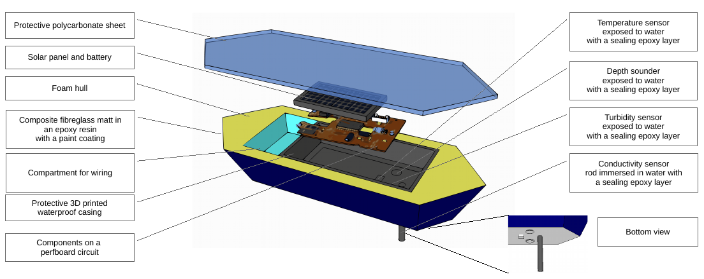

GEMS is a portable water quality assessment device in the form of a buoy, to be used in any mine or construction site that impacts a body of water nearby. The device is equipped with a range of sensors to measure water characteristics important to the operator. Sensor data is collected with an onboard processor, compiled, transmitted to a storage device such as a web server, and cached there for live tracking and data analysis.
The aim of the project is to aid and assist mines and construction sites to monitor water bodies, lower their costs of quality assessment, provide an adequate early warning system and enhance the safety of both operators and members of the public using the water bodies for economical or recreational activities.
GEMS is a prototype device and will have only a few crucial sensors in its first iteration. The design however, is modular and can be easily scaled up by adding sensors in a custom configuration depending on the end-user’s needs.
To design and build a portable system that will assist the user in geological and environmental monitoring. This will encourage safe work practices and the adherence of government regulations and standards in order to prevent negative impacts from construction activities.
Construction companies, mineral extraction operations and regulatory bodies that interact with the water bodies and containment structures are pursuing effective methods of monitoring bathymetry, sediment, and contaminants. Current methods of monitoring are slow, expensive and outdated and many do not include early warning systems. Our research found that no portable, easily deployed product exists that integrates depth sounding with long-term water quality monitoring. Developing a product that can do both would be very valuable to the user. It would prevent the use of multiple sensors for water quality monitoring. Traditionally, this is time consuming since the majority of water quality monitoring is done by a field technician taking samples, transporting samples, and running tests on site. Having a system that would be placed in the water body for periods of three months or more while taking frequent readings would make this process much more efficient. Since it would be continuously monitoring, the product could be used as a warning system for dam failures, early pollution detection, and exceeding water quality threshold levels in sensitive streams and water bodies.
This product is designed for any industry that requires water quality monitoring or bathymetry monitoring. Some examples would be civil construction projects that involve in-stream works, mining applications, environmental applications, and oil and gas industry applications. The user of the product would be field technicians, civil technicians, geologists, environmentalists, engineers, health and safety officers, and project managers.